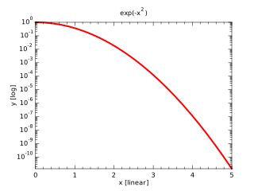

| Type | Visibility | Attributes | Name | Initial | |||
|---|---|---|---|---|---|---|---|
| integer, | public, | parameter | :: | N | = | 25 | |
| real(kind=wp), | public, | dimension(N) | :: | x | |||
| real(kind=wp), | public, | dimension(N) | :: | y | |||
| real(kind=wp), | public, | dimension(N) | :: | yl |
subroutine doLogPlot
!! 
integer,parameter::N = 25
real(wp),dimension(N)::x,y,yl
x = linspace(0.0_wp,5.0_wp,N)
y = exp(-x**2)
yl = log10(y)
call figure()
call subplot(1,1,1)
call xylim(mixval(x),mixval(yl))
call plot(x,yl,lineColor='r',lineWidth=2.0_wp)
call ticks(logy=.true.)
call labels('x [linear]','y [log]','exp(-x#u2#d)')
end subroutine doLogPlot